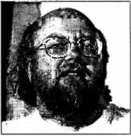

Джеймс Гослинг
Джеймс Гослинг (англ. James Gosling; 19 мая 1955 года, Калгари, Канада) — автор[1] объектно-ориентированного и кросс-платформенного языка программирования Java[2]. Кроме того, является создателем оконной системы NeWS, Gosling Emacs, а также был одним из разработчиков Star Seven.